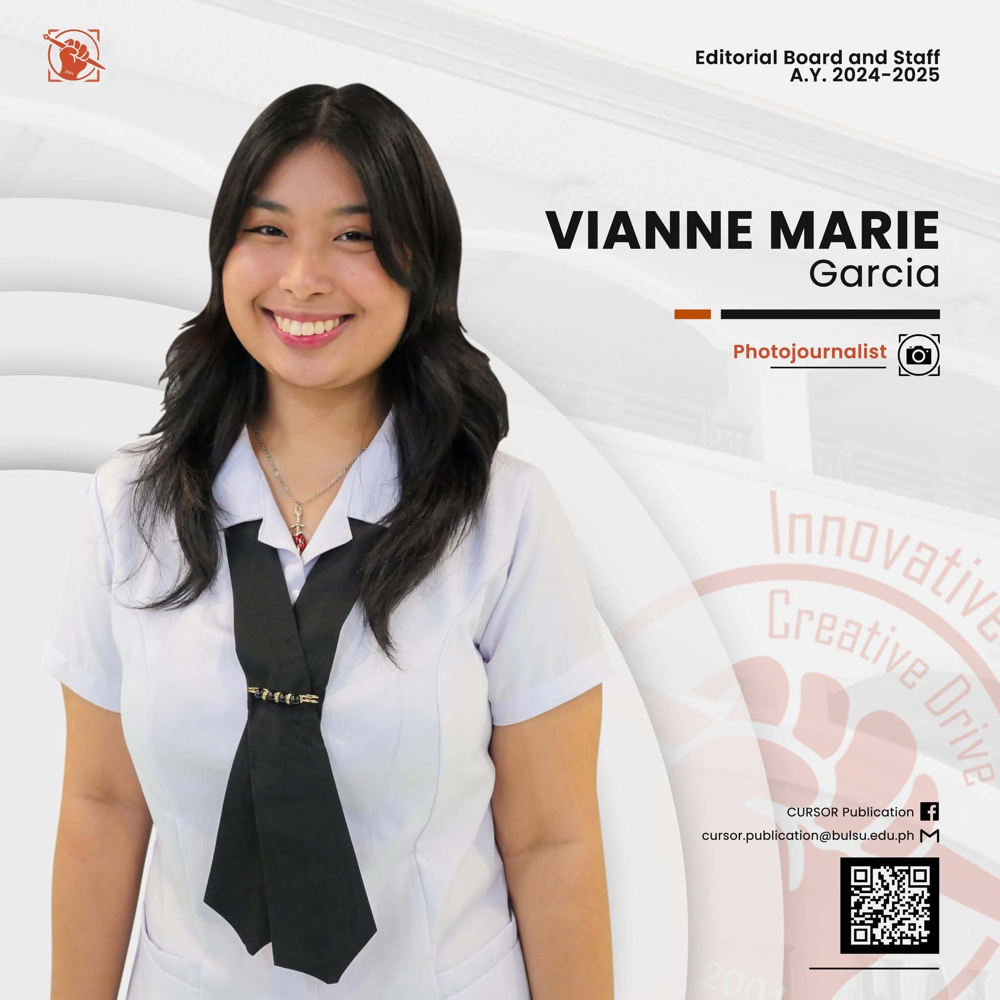

Click the photos
About me
I am an undergraduate student pursuing a Bachelor of Science in Information Technology, with a strong interest and motivation in technology and a passion for turning ideas into practical and creative solutions. I am eager to explore both the technical and creative sides of IT, from developing web-based systems and working with programming to designing user-friendly interfaces and other similar projects.
Through various academic projects, I have gained experience with different programming languages and platforms. With these experiences, I remain motivated to gain new knowledge, experiences, and challenges as I continue to develop my skills and explore the many possibilities within the field of technology.
Download resume- Dean's Lister, 3rd year GWA: 1.14 (1st semester), 1.25 (2nd semester)
- Capstone project leadership and research experience
- Gained experience in design, programming, database systems, and web development through coursework and projects
- Consistently achieved high honors
- Research and capstone experience and leadership
- Digital Team Head for Liturgical Organization
- Honor Roll from 9th to 10th grade
- Practical Research experience and leadership
- Received merit cards in MAPEH, Araling Panlipunan, Science, and English
- Consistently earned a spot on the honor roll
- Managed the production of products, customer communication, orders, and transactions
- Fulfilled custom commissions while learning new designs conforming to client requests
- Promoted products through digital marketing and social media platforms
- Managed client communication, project requirements, deadlines, and deliverables independently
- Adapted to different project requirements while completing work within the agreed deadlines
- Handled pricing, payments, and overall transactions with the clients
- Independently managed a TikTok affiliate account promoting makeup and skincare products and generated commissions through successful product referrals
- Created and edited promotional videos for product marketing and affiliate content
- Managed the account's visual presentation and organized the feed to maintain a cohesive and appealing appearance
Technology has always been an interesting space for me, as I am a curious individual who wants to know the lengths of the modern world and what else there is to be developed. I find the field to be something that always has something new to learn, create, and explore, rather than simply being existing knowledge. As a Bachelor of Science in Information Technology student, I have had the opportunity to discover different areas of IT and, along the way, find the parts that I enjoy the most.
One of the things I enjoy about Information Technology is the creativity that comes with it. From something so functional and complex to create, it can turn into something useful and appealing, applying both of my interests. Whether it is developing a website, designing interfaces, organizing databases, creating applications, or even working in game development, each project gives me different opportunities to learn and improve.
Throughout my academic journey, I have worked with several programming languages and technologies such as Python, Java, HTML, PHP, SQL, Unity, and UI/UX design. These have allowed me to surpass the limits of what I know rather than keeping my knowledge within a single area. The projects I have created and contributed to have challenged me to think more about functionality and development, whereas others have improved my long-term skills and passion for designing, aesthetics, and enhancing the overall user experience.
I am a firm believer that learning does not stop once a project or subject is finished. Thus, through additional training and certifications, including courses from Cisco Networking Academy and the Salesforce Agentblazer Champion Workshop, I have continued to expand my understanding of technology beyond the classroom.
As I continue my journey in the field of technology, I am filled with tenacity for gaining more real-world experience, learning from individuals with different perspectives, and taking on challenges that will help me grow and improve. Despite still being in the process of discovering which direction in technology I want to pursue, I am thrilled by the feeling that it brings me.